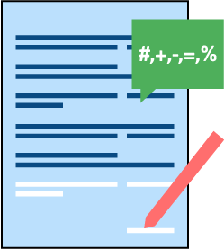
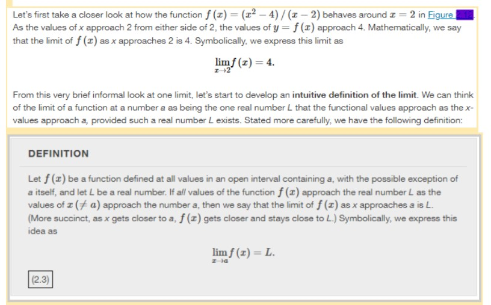
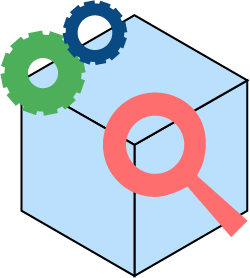
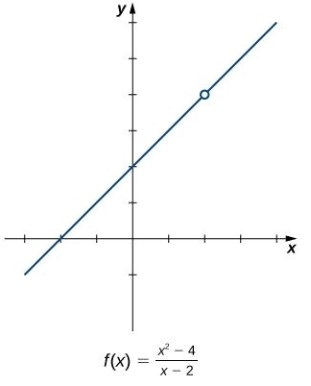
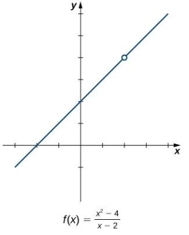
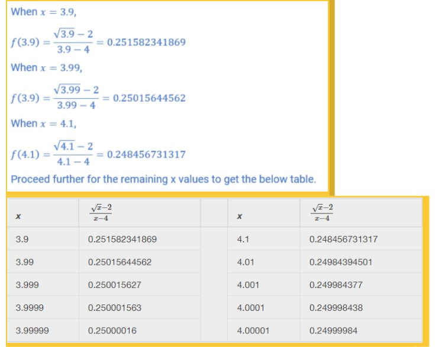
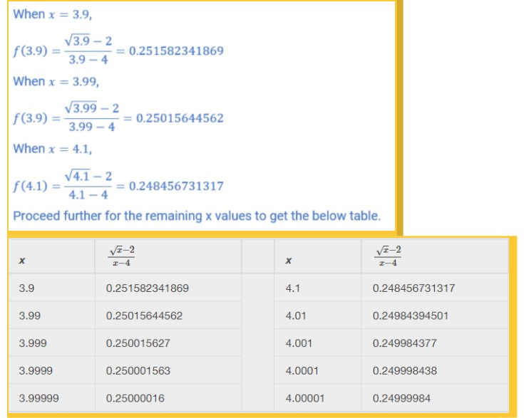
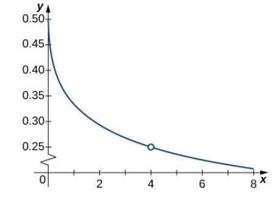
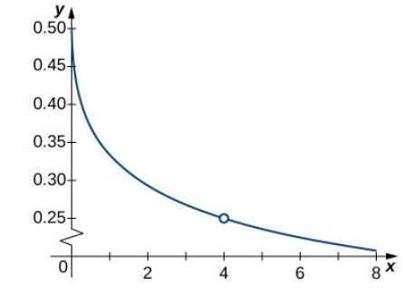

Introduction


- Using correct notation, describe the limit of a function.
- Use a table of values to estimate the limit of a function or to identify when the limit does not exist.
- Use a graph to estimate the limit of a function or to identify when the limit does not exist.
Intuitive Definition of a Limit

f(x): functional values
Explanation

The concept of a limit or limiting process, essential to the understanding of
calculus,
has been around for thousands of years. In fact, early mathematicians used a
limiting
process to obtain better and better approximations of areas of circles. Yet, the
formal
definition of a limit—as we know and understand it today—did not appear until the
late
19th century.
We, therefore, begin our quest to understand limits, as our mathematical ancestors did, by using an intuitive approach.

We, therefore, begin our quest to understand limits, as our mathematical ancestors did, by using an intuitive approach.

Content
Practice-Zone
Evaluate \( \lim_{x\ \to \ 4} \frac{\sqrt{x}-2}{x-4} \) using a table of functional values

Let us calculate the given function as x values approach 4 from both directions.
We will use x values as
3.9, 3.99, 3.999, 3.9999, 3.99999, 4.1, 4.01, 4.001, 4.0001, and 4.00001. 
We will use x values as
3.9, 3.99, 3.999, 3.9999, 3.99999, 4.1, 4.01, 4.001, 4.0001, and 4.00001. 
After inspecting this table, we see that the functional values less than 4 appear to
be
decreasing toward 0.25
whereas the functional values greater than 4 appear to be increasing toward 0.25.
whereas the functional values greater than 4 appear to be increasing toward 0.25.
As both columns approach a common f(x) value, 0.25, we conclude that .
$$ \lim_{x\ \to \ 4} \frac{\sqrt{x}-2}{x-4} = 0.25 $$
$$ \lim_{x\ \to \ 4} \frac{\sqrt{x}-2}{x-4} = 0.25 $$
A calculator or computer-generated graph of \( f(x)= \frac{\sqrt{x}-2}{x-4} \)
would be similar to that shown below and it confirms our estimate. 
At this point, we see from Example 2.4 and Example 2.5 that it may be just as easy, if not easier, to estimate a limit of a function by inspecting its graph as it is to estimate the limit by using a table of functional values. In Example 2.6, we evaluate a limit exclusively by looking at a graph rather than by using a table of functional values.
would be similar to that shown below and it confirms our estimate. 
At this point, we see from Example 2.4 and Example 2.5 that it may be just as easy, if not easier, to estimate a limit of a function by inspecting its graph as it is to estimate the limit by using a table of functional values. In Example 2.6, we evaluate a limit exclusively by looking at a graph rather than by using a table of functional values.
Let us calculate the given function as x values approach 4 from both directions.
We will use x values as
3.9, 3.99, 3.999, 3.9999, 3.99999, 4.1, 4.01, 4.001, 4.0001, and 4.00001.
After inspecting this table, we see that the functional values less than 4 appear to be decreasing toward 0.25
whereas the functional values greater than 4 appear to be increasing toward 0.25.
As both columns approach a common f(x) value, 0.25, we conclude that .
$$ \lim_{x\ \to \ 4} \frac{\sqrt{x}-2}{x-4} = 0.25 $$
A calculator or computer-generated graph of \( f(x)= \frac{\sqrt{x}-2}{x-4} \)
would be similar to that shown below and it confirms our estimate.
At this point, we see from Example 2.4 and Example 2.5 that it may be just as easy, if not easier, to estimate a limit of a function by inspecting its graph as it is to estimate the limit by using a table of functional values. In Example 2.6, we evaluate a limit exclusively by looking at a graph rather than by using a table of functional values.
We will use x values as
3.9, 3.99, 3.999, 3.9999, 3.99999, 4.1, 4.01, 4.001, 4.0001, and 4.00001.
After inspecting this table, we see that the functional values less than 4 appear to be decreasing toward 0.25
whereas the functional values greater than 4 appear to be increasing toward 0.25.
As both columns approach a common f(x) value, 0.25, we conclude that .
$$ \lim_{x\ \to \ 4} \frac{\sqrt{x}-2}{x-4} = 0.25 $$
A calculator or computer-generated graph of \( f(x)= \frac{\sqrt{x}-2}{x-4} \)
would be similar to that shown below and it confirms our estimate.
At this point, we see from Example 2.4 and Example 2.5 that it may be just as easy, if not easier, to estimate a limit of a function by inspecting its graph as it is to estimate the limit by using a table of functional values. In Example 2.6, we evaluate a limit exclusively by looking at a graph rather than by using a table of functional values.